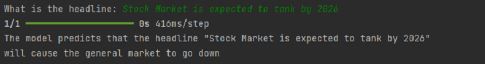
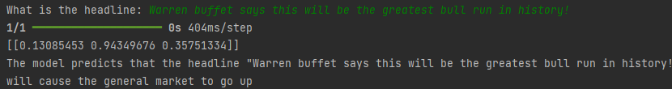
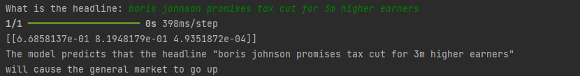
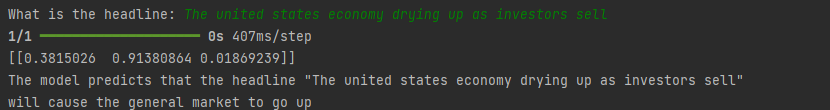
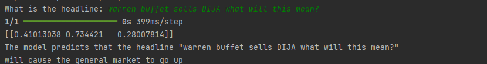

Stock Market News Analyzer
Since investing is a useful skill, but searching thousands of news articles to get a general change in how the market will change the next day is tedious, I decided that using an NLP I would make it analyze headlinesHow I started
I started this project by finding a dataset, however the dataset I found was quite small which would hinder the models accuracy a lot. The next step was creating a very simple CNN (Convolutional Neural Network) model using Tensorflow that would go through and analyze the headlines and generate a prediction on how the market would respond the next day.
After this, I would then proceed by formatting the dataset using the clean-text and re module. After that I would tokenize the data converting words into their own unique number so that the AI can understand the words that the user had inputted to the prompt then it was training the AI model which only took around an hour so it was pretty quick, This time around I didn't make a fancy UI because I had no idea how I would implement it, so instead I just used pythons base Input function which worked well for my use case. All in all despite the mediocre results, however, I still gained good experience from making this project, because It taught me how to make simpler, faster, more effective models, even if the dataset was too small to really see a great improvement
Tests:
  While these tests show my model in its best light, some of the results were pretty poor...
 